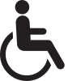

Московский метрополитен — инфраструктура и доступность
Все станции
 Станции с маршрутами, доступными для инвалидов-колясочников:
- без эскалаторов
- без лестниц, не продублированных лифтами или пандусами
- без пандусов, недоступных для инвалидов-колясочников (не соответствующих санитарно-техническим нормам)
- с шириной прохода не менее 78 см
 Станции с маршрутами, доступными для людей с затруднениями передвижения:
Станции с маршрутами, доступными для людей с затруднениями передвижения:
- без лестниц, не продублированных лифтами, эскалаторами или пандусами (допускается наличие одиночных ступеней)
- с уклоном пандуса не более 15% (8°)
Станции с маршрутами, доступными для людей с детскими колясками и габаритным багажом:
- без лестниц, не продублированных лифтами, эскалаторами, пандусами или рельсами (допускается наличие одиночных ступеней)
- с шириной прохода не менее 70 см
Подробнее о критериях доступности можно узнать в Докладе "Москва: доступность метро"
Общая статистика по метро
Инфраструктура
Маршруты
Доступность